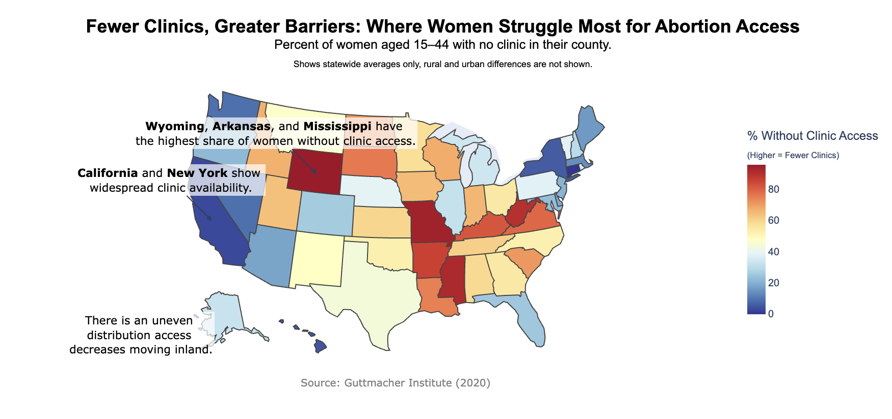
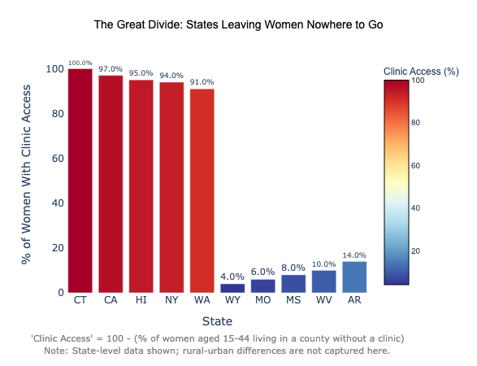

Proposition: States with fewer clinics create major access barriers for women in rural areas
FOR the Proposition

Design Decisions and Rationale:
- hi
- RATIONALE_2
- RATIONALE_3
AGAINST the Proposition

Design Decisions and Rationale:
- 1. Showing Both the Highest and Lowest Access States Instead of only showing the “best” states, we included both the top five and bottom five states in terms of clinic access. For this graph, the states that were chosen to represent areas with high percentages of clinic access and low percentages of clinic access were chosen based on the states' political party affiliation. With the states with the highest percentage of clinic access, they are among the top democratic/left-leaning states, which are pro-choice and allow women to have the freedom to get an abortion if they decide to. The states with the lowest percentage to clinic access are the more republican/right-leaning states, who are typically against abortion, and thus have composed of laws/policies which prohibit women to abortion clinics. Score: 2.0
- 2. Computing Clinic Access By transforming the data to include an arbitrary scale of clinic access, we give readers insight into how the top 5 and bottom 5 states for clinic access are computed, based on percentage of counties with no access to clinics and counties without a known abortion provider. There is no concrete way to compute the rural-ness of an area, which contributes to the score being a 1.0 as it is somewhat deceptive in not fully considering rural areas of all states. Score: 1.0
- 3. Using a red to blue color scale The color of the clinic is flipped to show that while the states with highest access to abortion clinics are red (commonly associated with the Republican party) and the lowest states are blue (associated with the Democratic party), they have inverse meaning. However, Republican states are commonly associated with a lack of abortion clinics, and Democratic states are known for a vast amount of abortion clinics for easy access. This contributes to the deceptiveness as it causes confusion for readers, who tend to associate the Democratic party and Republican party with blue and red, respectively, but the flip of colors illustrates the idea that despite having access to many clinics, this does not guarantee nor entail availability for women to go to a clinic. Score: 0.5
Final Reflection
[WRITE FINAL REFLECTION PARAGRAPHS HERE.]